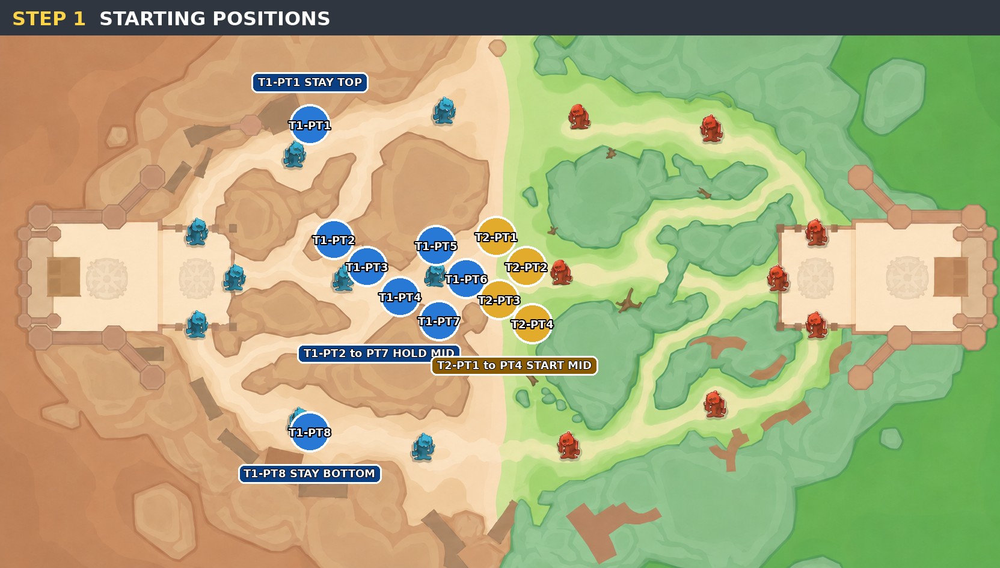
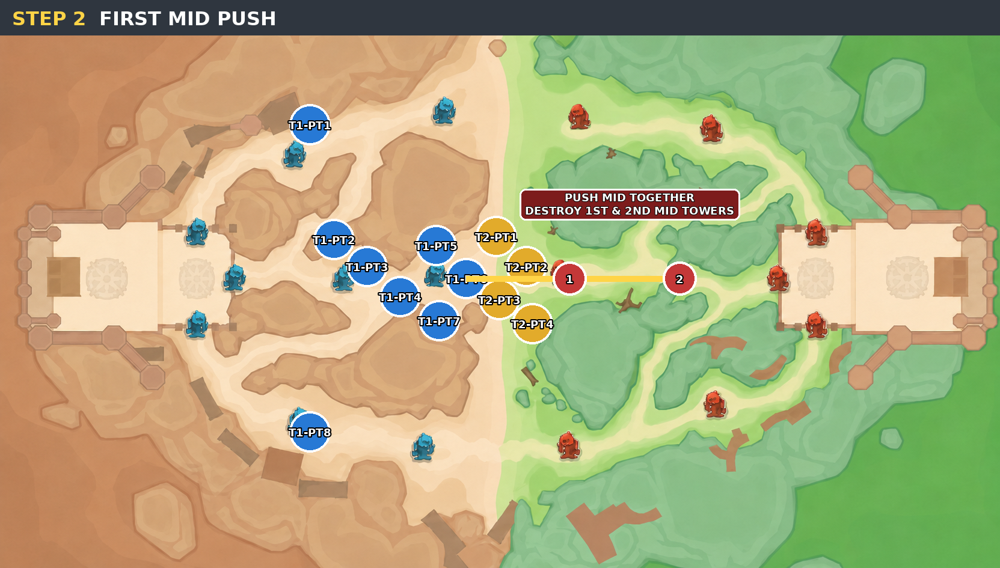
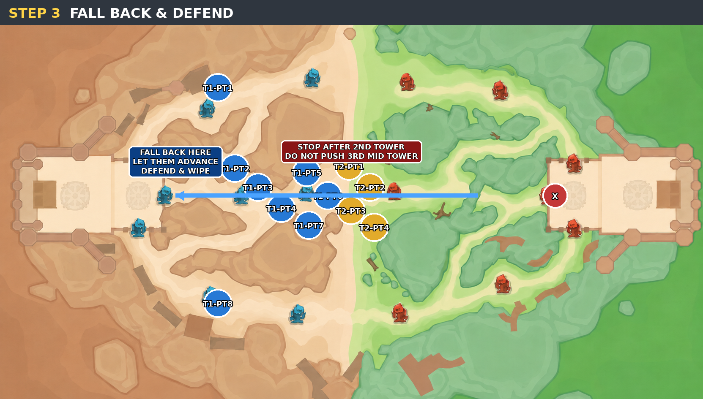
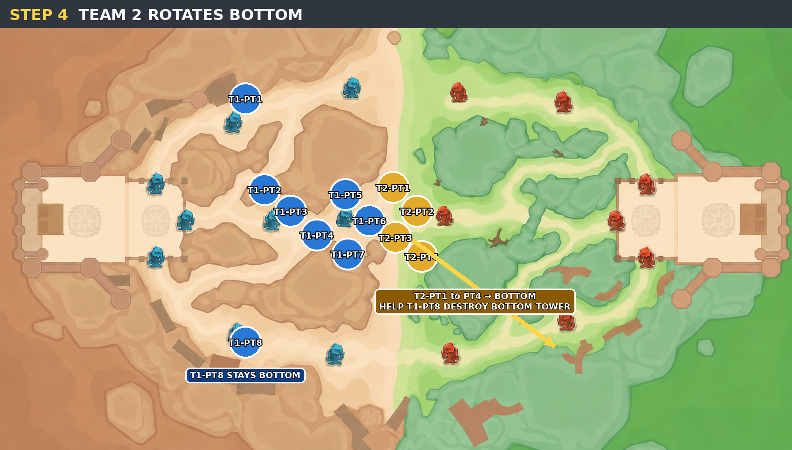
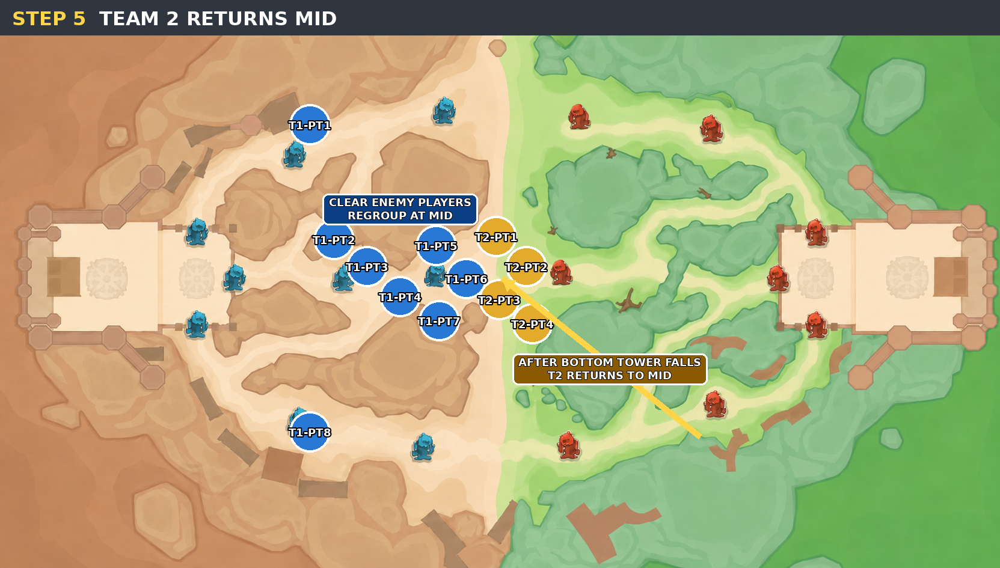
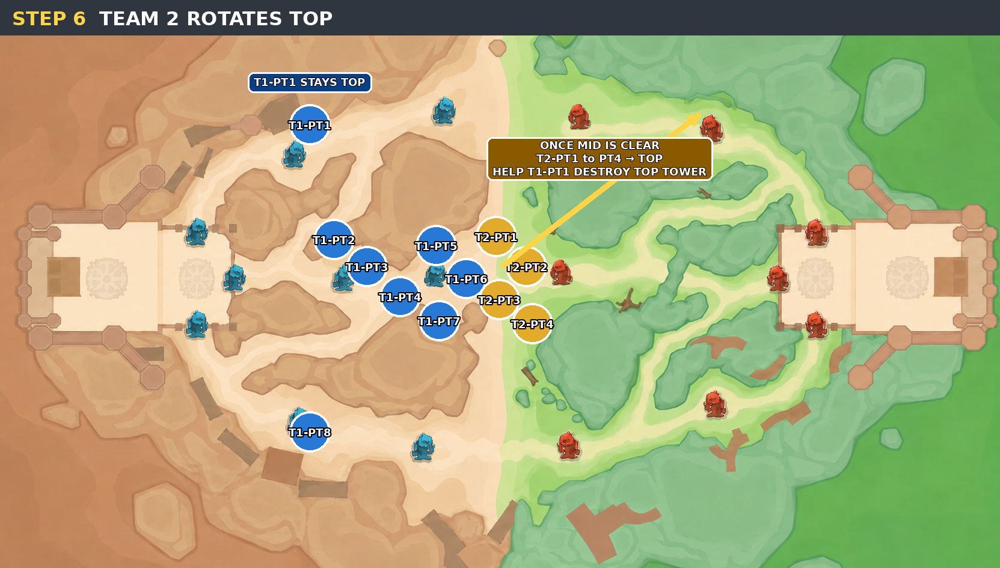
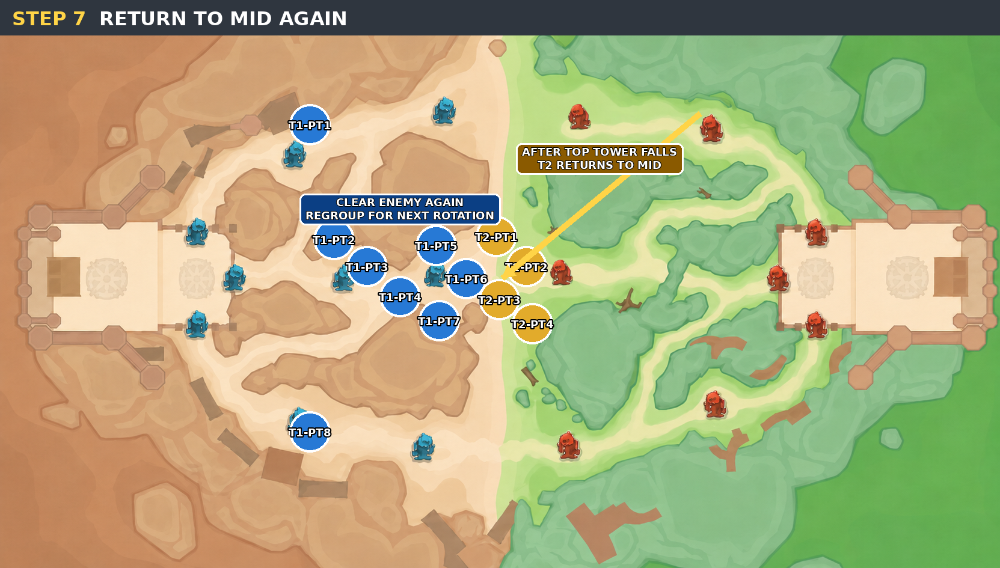
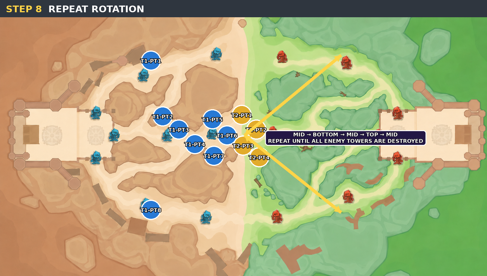

TOP
Stay at TOP. Offline (Alithea) will roam and assist TOP when needed.
GUILD LEAGUE STRATEGY
Use this page during command calls. The maps show each step first, with the written instruction directly below.
TEAM SETUP
Stay at TOP. Offline (Alithea) will roam and assist TOP when needed.
Stay at BOTTOM. Spellflight (Alithea) will roam and assist BOTTOM when needed.
Stay at MID. Control and defend MID.
Start at MID and rotate when instructed.
STRATEGY STEPS








MID -> BOTTOM -> MID -> TOP -> MID
IMPORTANT ROLES
CLASS GUIDELINES
ROTATION SUMMARY